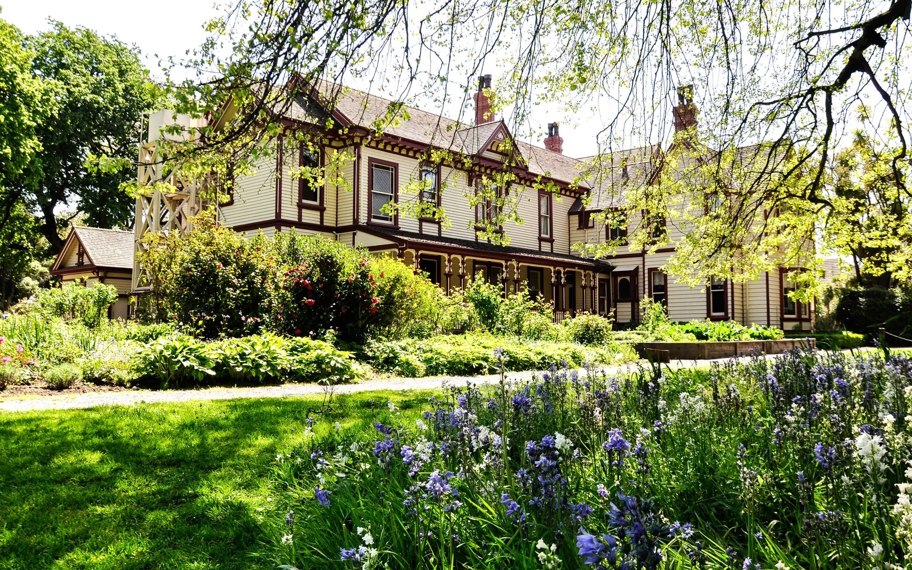
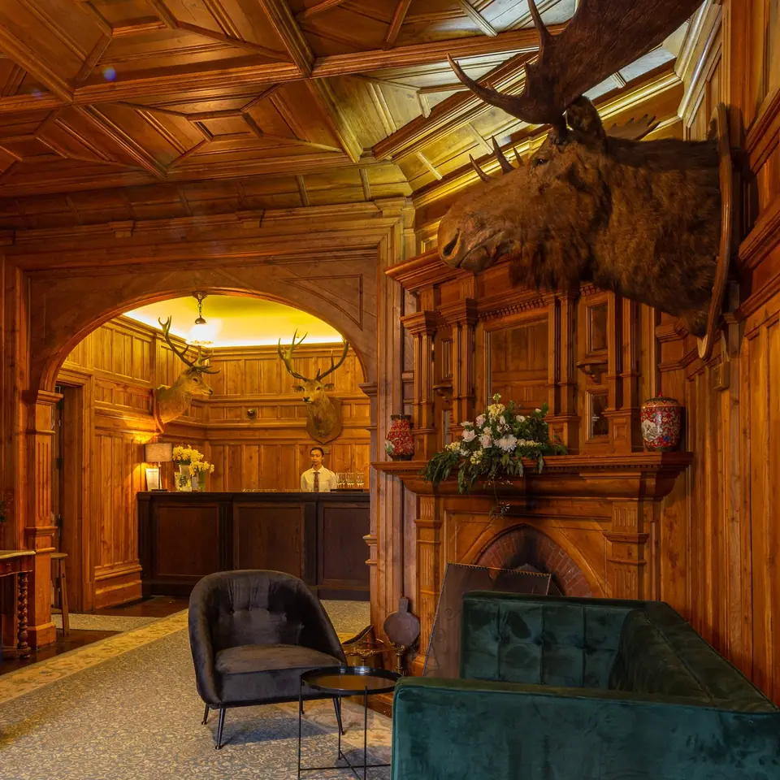
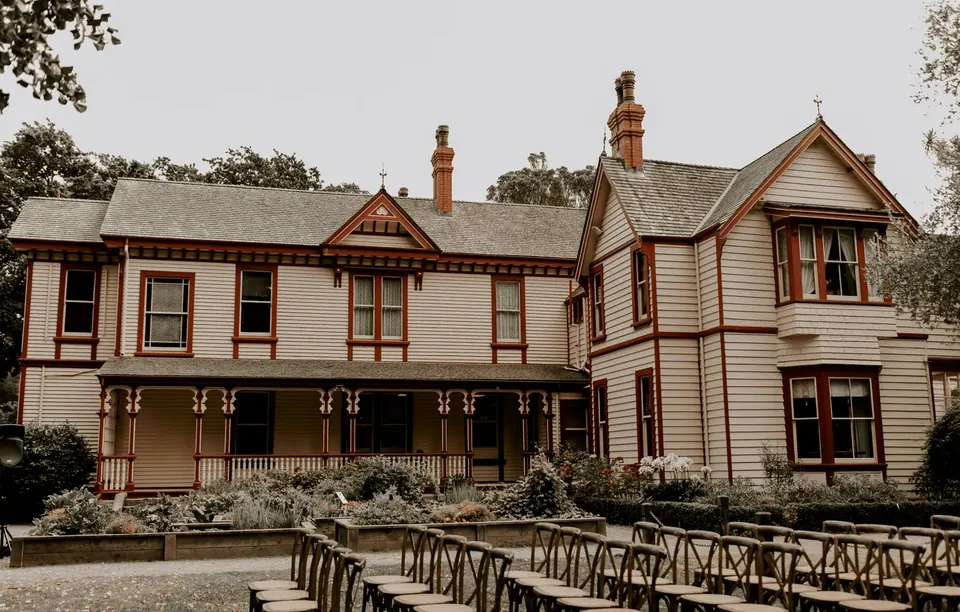
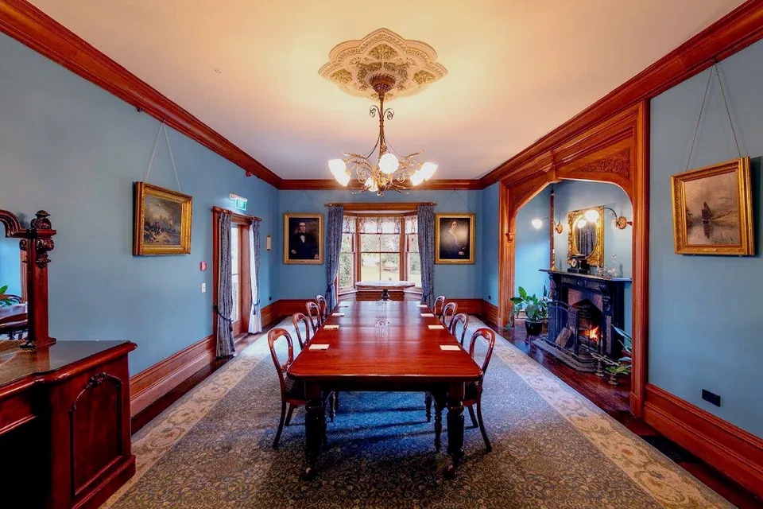
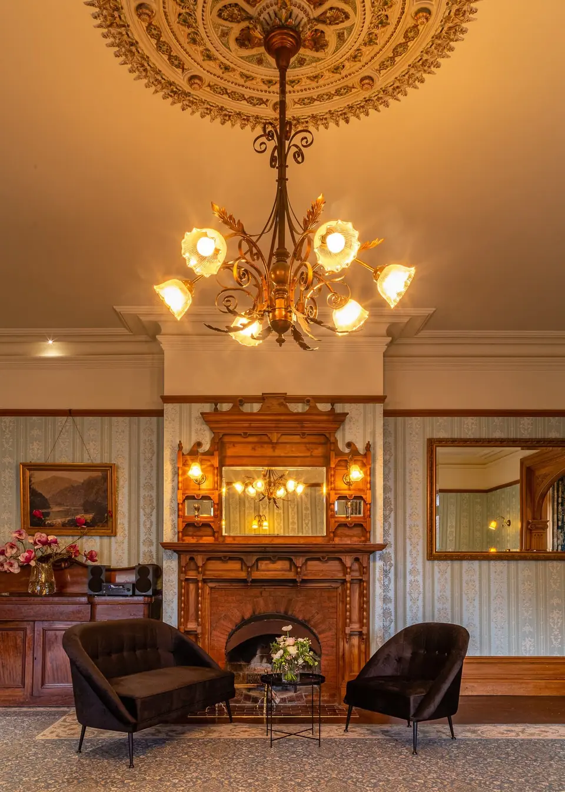

Seasonal lunches in a heritage homestead.
Choose from seating inside the heritage homestead with open fires or outside on the veranda or umbrella tables with all day sun.
- Now
- HoursMon to Fri 9am–3pm
Sun 9am–4pm
Sat closed - AddressRiccarton House, 16 Kahu Road, Christchurch 8041
- Phone03 348 6190
Riccarton House
Two beautiful dining spaces connected by the oak panelled entrance hall, with open fires in the winter.
The cafe sits in a heritage listed homestead in central Christchurch and is run by events team Marchant and Co. The menu draws on inspiration and ingredients from the Saturday Christchurch Farmers Market.

Riccarton House
Inside the homestead
The front lawn, the Blue Room, the Drawing Room and the oak-panelled hall.



Riccarton House & Bush
Find us on Kahu Road
| Monday | 9am–3pm |
|---|---|
| Tuesday | 9am–3pm |
| Wednesday | 9am–3pm |
| Thursday | 9am–3pm |
| Friday | 9am–3pm |
| Saturday | Closed |
| Sunday | 9am–4pm |
- Closed on Saturdays for the Christchurch Farmers' Market on site, and on public holidays.
- Café bookings by phone or through the online booking on the reservations page.
- Weddings, corporate functions and private dinners: the events office is open Monday to Friday, 9.00am to 4.30pm.
- Plenty of onsite parking.